Rats
We have a number of rats, both as pets and as part of the rattery. The majority were bred by Caledonian Rattery, while others are from rescue centres.
Current rats
Breeding Bucks
Caledonian Blooregard Q. Kazoo (Bloo)
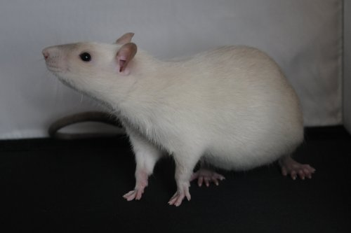Bloo is from our original Caledonian trio, and is the main reason I have decided to breed Russian blue point Siamese. He is a lovely buck — both in temperament and in looks. As a kitten he was a very playful boy, but has mellowed out into a very chilled rat. He took over from Ralph as alpha of our group when he hit adolescence and grew to fill the role. He still however loves cuddles though will push you away if you try and give him a kiss! He has been very successful on the show bench gaining 20 NFRS stars making him a Platinum champion, and giving enough wins to class him as a Show champion too. So far he has had one litter (with Caledonian Lilly) and hopefully he will be a mainstay in continuing this line.
Pets
Caledonian Smoke me a Kipper, I'll be back for Breakfast (Ace)
Ace came to us with Eddie in December 2011. They were from two different litters only a couple of days apart. Ace is a troublemaker through and through, but so very entertaining along with it! He enjoys nothing more than winding up our other rats, but always runs away to shelter on us if he goes too far. He loves people and although cuddles are rather boring he thinks we make very good climbing frames.
Caledonian Cunning Plan (Baldrick)
Baldrick came as a companion for Gaspode from Caledonian Rattery. I had agreed to take the runt of the litter (Gaspode) and chose Baldrick as the other due to his stunning shiny black coat. He's a little bit of an odd chap — very much like a doe in his behaviour. He is very active, and loves to climb. He was never much bothered in us as a youngster but as he's grown up he's turned into a rather affectionate boy, even if he still doesn't really like sitting still for cuddles!
Caledonian Licky End (Gaspode)
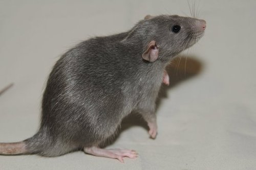Gaspode was the runt of his litter — small and with a damaged eye from another's nail. He came to me as still quite a small rat even though he was 10 weeks old. However what he lacked in size he made up for in personality and he was a handful right from the beginning! He loved play fighting with the other rats, and using them all as mobile playthings. You would never know him as the runt now as he has matured into a large and chunky buck. He is still as daft as a brush, and can nearly equal Boots in the lickiest rat.
Caledonian Rat in Boots (Boots)
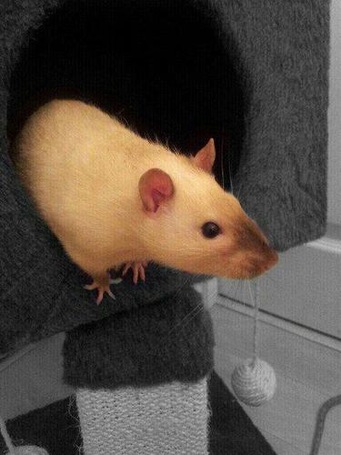Boots is also from our original Caledonian trio. He is the friendliest rat you will ever meet, liking nothing more than to have cuddles and give you a good grooming! He is also a very playful rat, having not really grown out of his kitten games, and loving to chase your hand around and wrestle with it. He has also been relatively successful on the show bench, winning best Siamese numerous times and having gained 5 NFRS stars. Due to his lovely nature, he has also done well in the pet classes, gaining a NFRS pet point as well.
Caledonian Roobarb and Custard (Roobarb)
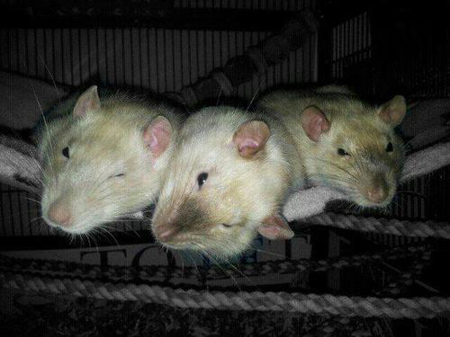Roobarb was one of the trio of boys we originally got from Lois at Caledonian Rattery. Having been bred for good temperament, and having being handled from a young age, they were all friendly and outgoing boys from the get-go. Roobarb had had an ear infection as a kitten, and even though it was cleared up, it left him with a noticeable head tilt. This doesn't really affect him in any way, and he is a very active rat! He was not blessed with a lot of brains, but doesn't let that stop him...
Ralph
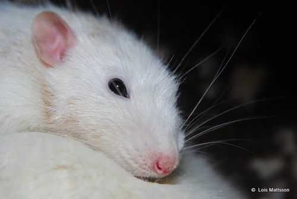Ralph came to us from the RSPCA with his brother Roland. He was a lovely, friendly chap — a bit more intelligent than his brother, but still no great thinker! He is quite people orientated, and although he lives quite happily in a large groups of rats, he does mostly keep to himself. He loves scritches, and will groom us back if you get him in the right spot! He has been a wonderful ambassador at ratty PR event, showing people how lovely rats are.
Ronan
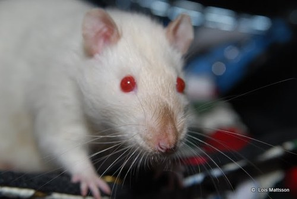We got Ronan as a 12 week old kitten from Ratscallions rescue, along with his brother Riddle. They were company for Piggly-Wiggly, our last remaining rat at the time. As they were both partially hand reared, they were both very friendly boys. Ronan was very much a people rat — he adored cuddles, and would sit for ages with you, just happy to be there. He caused more of a trouble with other rats, having to be neutered as he was quite aggressive to Rocky and Rolly initially. He's now settled down, but is still a drama queen and likes to be the centre of attention!
Departed Rats
Riddle
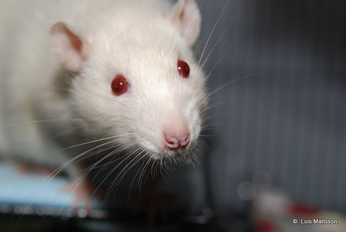We got Riddle as a 12 week old kitten from Ratscallions rescue, along with his brother Ronan. They were company for Piggly-Wiggly, our last remaining rat at the time. As they were both partially hand reared, they were both very friendly boys. Riddle was a very independent rat, never wanting cuddles and much more interested in exploring. He stayed like this all his life, and although he didn't dislike us, we always felt as if he didn't really need us there! He was PTS early 2012 due to a longstanding respiratory illness at just under 2.5 years old. He was the first rat that we had taken from kitten to old age, and he will leave a hole in our group.
Eddie
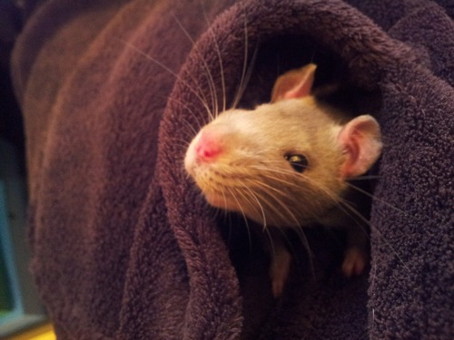Eddie was bred at Caledonian Rattery and was from the first litter sired by our Bloo, so we had to have him! He was a very friendly little kitten, and loved playing with his littermates and later on his much larger cagemates. However, when he reached 3 months he started to have fits. Epilepsy is very rare, though not unheard of, in rats and we started him on treatment. Unfortunately this didn't seem to help, and he died at just 16 weeks old. We now believe that he had a brain tumour which was causing the fits, not epilepsy. His death was very hard to take at such a young age.
Roland
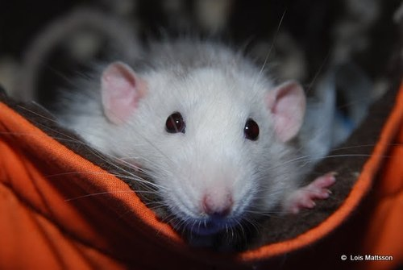Roland came to us from the RSPCA with his brother Ralph. From the beginning he was a very friendly and people-orientated rat. He was rather dim, but this didn't stop him enjoying life! He could usually be found curled up with his friends, having a brux. He really loved living in a large group and all the others missed him when we had to have him PTS due to respiratory problems.
Rooney
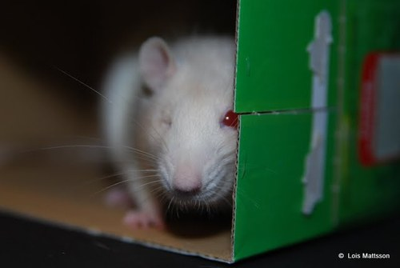Rooney came from the Pets @ Home adoption centre where he was 'unsellable stock' as he only had half a tail and also a massively enlarged eye. Our vet diagnosed glaucoma, and the eye was removed. He adapted very well to having one eye and also settled nicely into our group even though he'd not lived with another rat since he was weaned. He was very nervous when we got him, but gradually gained in confidence to become a lovely, friendly boy which was so very rewarding. He died very unexpectedly, which was a huge loss.
Rolly
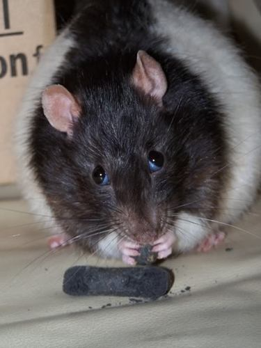Rolly was a very special rat to me. Coming to us at 2 years old with his brother, Rocky, he quickly showed us exactly what he wanted! He loved people, food and his brother. If he had any of those three he was happy. He was a very simple rat and would often just sit there bruxing and boggling to himself... He was also a very kind soul, and helped every new rat we introduced to him settle in well. He soldiered on until he was 33 months old, loving every minute of the extra attention he got. I know there will never be another rat like him.
Rocky
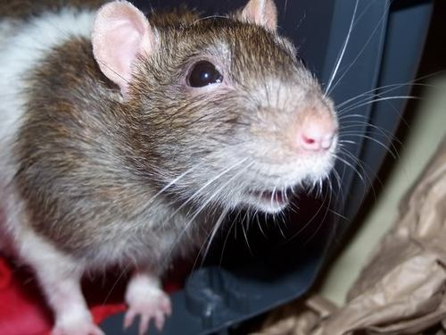Rocky came to us from the Pets @ Home adoption centre. He and his brother Rolly had been there for months before we took them home. Rocky was a very clever boy, and was an amazing alpha to my group at the time. He was about 2 when we got him, and although we only had him for the last 6 months of his life, I like to think he had a nice retirement with us.
Drake, Piggly-Wiggly & Pants
These three boys came to my from my brother when he couldn't keep them anymore, and were my first rats since I was a child. They came from a pet shop and were rather un-socialised. Drake was the only one who enjoyed being around us, but we loved them all and they are the reason we have rats today! Unfortunately none of them were very healthy and we lost all three by the time they were 15months old.